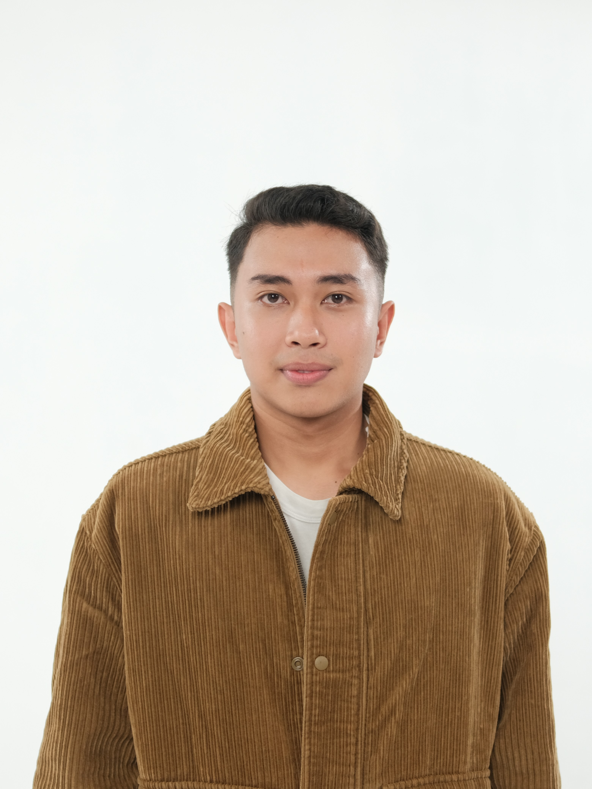
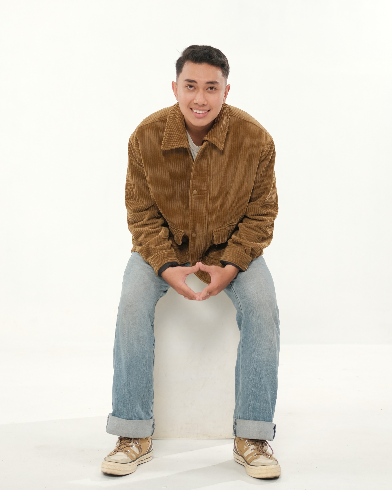

Hai, Saya Yudha Rifal Kelana
Saya seorang
Mahasiswa yang bersemangat dalam belajar, terutama tentang Informasi dan Teknologi. Selamat datang di portofolio pribadi saya.

Tentang Saya

Developer & Problem Solver!
Saya adalah mahasiswa Teknik Informatika semester 6 dengan fokus pada Fullstack Web Development dan Cyber Security — membangun aplikasi yang tidak hanya fungsional, tetapi juga aman. Pengalaman nyata saya tercermin melalui berbagai proyek di sektor UMKM, mulai dari pembuatan website bisnis hingga pengembangan aplikasi mobile yang membantu pelaku usaha berkembang di era digital. Saya terbiasa menerjemahkan kebutuhan klien menjadi solusi teknologi yang tepat sasaran, mudah digunakan, dan siap bersaing — karena bagi saya, teknologi yang baik adalah teknologi yang berdampak nyata. Di sela aktivitas tersebut, saya juga aktif bermusik sebagai pemain gitar dan perkusi, yang melatih saya untuk selalu berkolaborasi dan berpikir kreatif dalam setiap pekerjaan.
Hubungi SayaKeahlian Saya
Web Development
Membangun antarmuka web yang responsif dan modern serta mengelola logika server-side.
Keamanan Siber
Mengimplementasikan enkripsi dan hashing untuk melindungi data pengguna pada aplikasi web.
Bahasa Pemrograman
Menguasai konsep OOP, struktur data, dan algoritma melalui berbagai bahasa pemrograman.
Database & Tools
Mengelola data relasional dan menggunakan version control untuk kolaborasi pengembangan.
Musik
Melatih kreativitas, kedisiplinan, dan kemampuan berkolaborasi melalui penampilan di berbagai acara.
Proyek Unggulan
Website SIM-KIP
Proyek mata kuliah sistem keamanan, fokus pada keamanan database dan password untuk Sistem Informasi Manajemen KIP.
Sistem POS Warung Z&Z
Aplikasi Point of Sale berbasis mobile untuk pengelolaan transaksi dan stok di Warung Z&Z.
SIMPENAGIHAN
Sistem informasi penagihan untuk UPTD PPD Kota Tanjungpinang — proyek Kerja Praktik resmi.